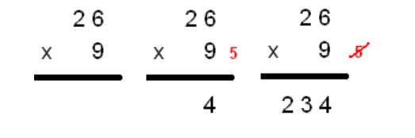
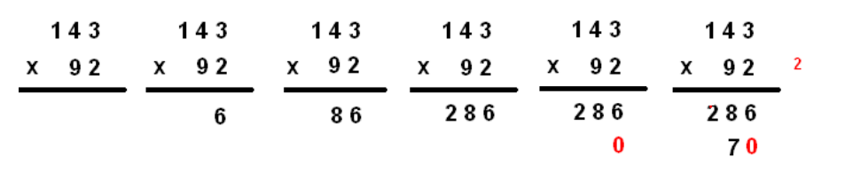

.gif)
Multiplication
Qu'est-ce que la multiplication?
Multiplication est une opération qui représente l'idée de base de ajout du même numéro. Les nombres qui sont multipliés sont appelés les facteurs et le résultat obtenu après la multiplication de deux nombres ou plus est connu comme le produit de ces nombres. La multiplication est utilisée pour simplifier la tâche d'ajout répété du même nombre.
Exemple: S'il y a 6 boîtes de bonbons et que chaque boîte contient 9 bonbons, trouvez le nombre total de bonbon.
Resoudre par la multiplication
Maintenant, utilisons la multiplication pour résoudre ce problème. Nous multiplierons le nombre de boîtes avec le nombre de bonbons dans chaque boîte. Si nous multiplions 6 x 9, nous obtiendrons le nombre total de bonbons, soit 6 x 9 = 54 bonbons. Ainsi, nous pouvons voir que nous obtenons le même résultat dans une période de temps plus courte. C'est la raison pour laquelle la multiplication est également appelée addition répétée.
Vocabulair de multiplication
Multiplicand x Multiplicateur = Produit; où:
NOTER BIEN
Techniques de calcule
La multiplication à un chiffre
Quand on a une multiplication à résoudre, il faut, en premier, la poser. Dans le cas de la multiplication à 1 chiffre, on a un nombre qui est multiplié par un chiffre. Pour la poser, on écrit le nombre, puis le chiffre en dessous, en prenant soin de bien aligner le chiffre avec celui des unités d’unités simples du nombre. Ensuite, il ne reste plus qu’à écrire le « x » et à tracer un trait. Pour calculer cette multiplication, on commence par le chiffre (celui en dessous du nombre) et on va le multiplier par chaque chiffre (de la droite vers la gauche) du nombre, successivement. A chaque fois, on écrira le résultat dans la même colonne que le chiffre du nombre qui a été multiplié. Attention, si le résultat est supérieur ou égal à 10, on mettra, en retenue, tous les chiffres sauf celui des unités d’unités simples.
Exemple:Posons la multiplication suivante : 26 x 9. Pour la poser, on écrit d’abord 26, puis on aligne le 9 avec le 6, en dessous du 26. On écrit ensuite, le « x » et on trace le trait. Pour résoudre cette multiplication on va multiplier le 9 par tous les chiffres situés au dessus, toujours de la droite vers la gauche. 9 x 6 = 54. Je pose 4 et je retiens 5. Je passe au chiffre suivant : 9 x 2 = 18. Mais il y a la retenue 5 donc on fait 18 + 5 = 23. J’écris le 23. Le résultat de 26 x 9 est donc 234.
La multiplication à deux chiffres
Attention: il faut bien maitriser la multiplication à un nombre avant
Pour résoudre une multiplication à deux chiffres, on commence par la poser, en prenant soin de bien aligner chaque chiffre des deux nombres, de la droite vers la gauche. Ensuite, on multiplie, successivement, le chiffre situé à droite du deuxième nombre avec tous les chiffres du premier nombre, de la droite vers la gauche. On marque à chaque fois le résultat dans la même colonne que le chiffre (du premier nombre) multiplié et on pense aux retenues. Une fois que cela est fait, on va à la ligne et on écris un zéro. Ensuite, il faut multiplier le deuxième chiffre (celui à gauche) du deuxième nombre, successivement, par tous les chiffres du premier nombre. Le premier résultat sera écris après le zéro et ainsi de suite. Enfin, on trace un trait et on additionne les deux chiffres de chaque colonne pour obtenir le résultat de cette multiplication.
Exemple Posons la multiplication 143 x 92. Pour cela, on aligne le 2 avec le 3 et le 9 avec le 4. Passons maintenant à la résolution : on commence par le 2 et on va le multiplier, successivement, par tous les chiffres de 143. 2 x 3 = 6, je pose le 6 dans la même colonne que le 3. 2 x 4 = 8, je pose le 8 dans la même colonne que le 4. 2 x 1 = 2, je pose le 2 dans la même colonne que le 1. Comme j’ai multiplié tous les chiffres de 143 par 2, je vais à la ligne et je mets un zéro dans la colonne de droite. Ensuite je multiplie 9 par tous les chiffres de 143. 9 x 3 = 27, je pose 7 et je retiens 2. 9 x 4 = 36, attention il ne faut pas oublier la retenue : 36 + 2 = 38. Je pose 8 et je retiens 3. 9 x 1 = 9 et en ajoutant la retenue, 9 + 3 = 12, je pose donc 12. Ensuite je trace un trait et j’additionne les chiffres colonne par colonne : 6 + 0 = 6, je pose 6. 8 + 7 = 15, je pose 5 et je retiens 1. 2 + 8 = 10 et avec la retenue on a 10 + 1 =11. Je
